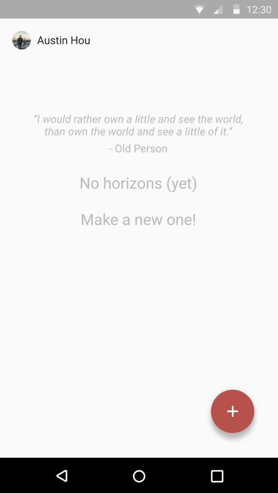
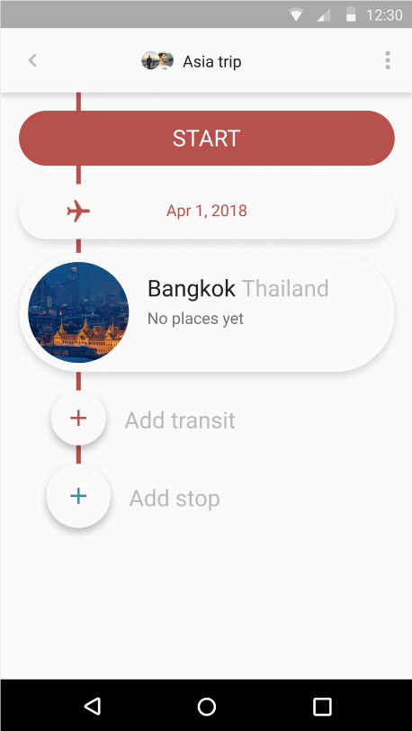

horizons (wip)
'horizons' was a concept I created to solve a problem that I had been facing throughout my travels - collaborative travel planning.
Current solutions are difficult to use - we had tried many products throughout a few trips, and they were either
- Too messy - information is not clearly presented, too much irrelevant information is displayed
- Too inflexible - it's essentially a very specialized calendar, with everything planned to the minute. Changes in plan render the schedule useless.
- Too bloated - too many features that are never used. Increases cognitive load and confuses the user
- Too tedious - being useful required a ton of data entry
Taking inspiration for collaborative music playlists, I wanted to design a system that:
- Served as a scratchpad for multiple people to brainstorm, edit, and refine any kind of stop on a trip
- Valued flexibility - was designed with the fact that plans change in mind
- Was easy - I wanted to create a solution that was not only intuitive, but useful over the entire scale of [how much data a user was willing to enter]
Below are the prototype designs and flows that I created:

